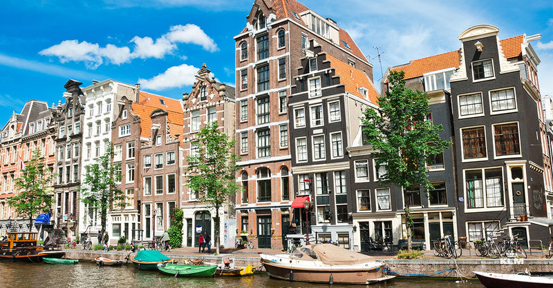

Ce vizităm în Olanda?
Amsterdam
Amsterdam este unul dintre cele mai vizitate orase din Europa si unul dintre cele mai frumoase, oferind o multime de obiective turistice, oameni foarte prietenosi si peisaje urbane impresionante. Amsterdam a devenit oras in anul 1300 si de atunci, a reusit sa atraga o multime de negustori bogati si de oameni care s-au stabilit aici. Numarul de turisti care ajung in fiecare an, atinge 3.5 milioane, iar dintre acestia, romanii au o pondere destul de mare. Este un oras ideal pentru o escapada de cateva zile, in weekend si este un oras ideal pentru cei care sunt pasionati de cultura. De fapt, Amsterdamul reuseste sa ofere cate ceva interesant fiecarui turist, indiferent de preferintele pe care le are. Cei ce apreciaza cultura si istoria, au o multime de muzee de vizitat, cei care apreciaza viata de noapte si petrecerile, sunt asteptati de sutele de cluburi si baruri de noapte, in timp ce persoanele care vor doar sa se relaxeze, pot face plimbari interminabile pe stradutele orasului. Desi are 1 milion de locuitori si an de an este vizitat de 3.5 milioane de turisti, Amsterdamul nu are o suprafata foarte mare. Astfel, daca vrei sa il explorezi, o poti face pe jos sau cu bicicleta. Evident, o plimbare cu vaporasul pe canalele orasului poate sa fie si ea o optiune ideala pentru cunoasterea locurilor si a vietii din Amsterdam.
Lisse
În orașul Lisse,aici putem să vizităm Grădinile Keukenhof la doar 45 minute distanță de Amsterdam, de unde se poate lua autobuzul (curse din 15 în 15 minute), până la porțile imensului parc. Parcul floral a debutat ca grădină de zarzavat a Castelului Teylingen, fiind îngrijit de o bucătăreasă de la castel, care, alături de plantele aromatice și ingredientele folosite la bucătărie, a început să planteze și flori pentru stăpânii săi. În 1949 aici a fost găzduită prima expoziție de flori cu bulb a producătorilor locali, pentru ca în anii 2000 să aibă statutul de cea mai frumoasă grădină din lume.
Edam
Edam este unul dintre cele mai cunoscute localități din Olanda, iar acest lucru se datorează în mare parte faptului că este locul de proveniență al tipului de brânză cu același nume. Localitatea cu aproape 7.300 de locuitori este de o frumusețe excepțională. Poți vizita Edam atunci când faci o excursie în nordul Olandei. În lunile iulie și august, în fiecare miercuri, în Edam poți participa la Târgul de Brânză, un obicei vechi, reintrodus din 1989.
Giethoorn
Giethoorn este supranumit și Veneția Nordului este un sătuc din provincia Overijssel. Transportul prin localitate se realizează predominant pe apă, Giethoorn fiind un oraș pietonal. Există câteva excepții în Giethoorn aplicabile șoferilor de autoturisme și bicicliștilor, localitatea păstrând un aer liniștit și boem. Un lucru interesant este că, deși Giethoorn este o localitate cunoscută pentru turiștii europeni, cei care ajung în această zona sunt predominant chinezi. De fapt, aproape 200.000 de chinezi vizitează Giethoorn anual.